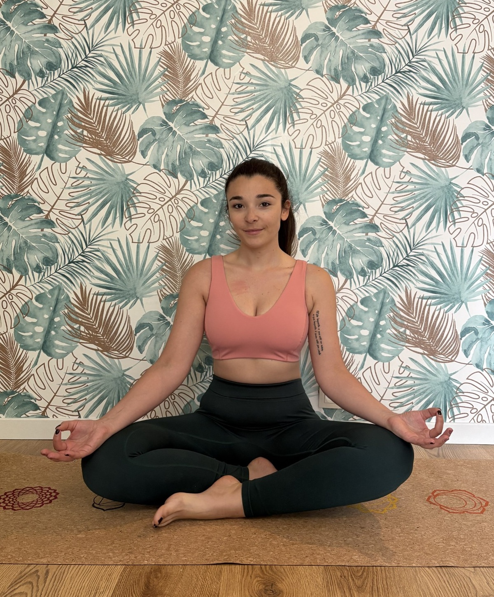

Cours de yoga doux & sur chaise à Gagny et en ligne
Bienvenue chez Majoh. Pratiquez le yoga dans un cadre intimiste à Gagny ou depuis chez vous, en petit groupe ou en cours particulier. Une approche douce, accessible à tous les âges et tous les niveaux — sans pression, ni performance.
Réserver une séance
Quel cours est fait pour vous ?
Trois pratiques pensées pour vous reconnecter à votre corps en douceur, accessibles aux débutants comme aux pratiquants confirmés.
Hatha douceur
Mouvements doux, mobilité, respiration et étirements. Idéal pour relâcher le stress et retrouver une posture saine. Pour tous les niveaux, y compris débutants complets.
Hatha flow
Une pratique plus dynamique et fluide, pensée pour réveiller le corps et relâcher les tensions de la journée. Pour qui souhaite un peu plus d'énergie dans sa pratique.
Yoga sur chaise
Pratique douce et sécurisée, idéale pour les seniors, les personnes à mobilité réduite, ou pour qui souhaite pratiquer sans descendre au sol.
Cours en présentiel au Studio Majoh à Gagny — ou depuis chez vous en ligne.
Le Studio Majoh à Gagny
Un espace chaleureux et lumineux, à 10 minutes à pied de la gare RER E, pour pratiquer en petit groupe de 6 personnes maximum.

Cours collectifs & particuliers
Cours collectifs le mardi soir et le samedi matin au studio à Gagny, ainsi que des cours particuliers sur place, à votre domicile ou en entreprise.
Les tapis et accessoires sont fournis. Vous n'avez besoin que d'une tenue confortable.
Qui suis-je ?
Je m'appelle Johanne. Je pratique le yoga depuis dix ans, et j'enseigne depuis un an. Ce qui a commencé comme une recherche personnelle de calme et de mobilité est devenu une vraie passion — au point de vouloir la transmettre.
Je suis certifiée en Hatha et Vinyasa (200h) par l'école Yoga Vision à Paris. Mon premier déclic comme enseignante est venu en donnant quelques cours aux amis de mes grands-parents. Voir des personnes qui se croyaient « trop raides » ou « pas assez sportives » repartir détendues et plus mobiles m'a confirmé que je voulais en faire mon métier.
Mon approche
Pas de performance, pas de spiritualité affichée. Ce qui me guide, c'est la douceur, la bienveillance et l'écoute. J'aime particulièrement accompagner les personnes qui me disent « le yoga, ça va être trop dur pour moi » — débutants complets, seniors, femmes après une grossesse, salariés stressés. Le corps suit toujours, à condition qu'on le respecte.
En dehors du tapis
Vous me trouverez plus souvent en forêt qu'au studio : course à pied, randonnée, balades en pleine nature. À la maison, un chat, un chien, et beaucoup de calme.
Pourquoi choisir Majoh ?

Accessible à tous
Des cours pensés pour tous les niveaux, sans pression ni performance.

Yoga en douceur
Mobilité, respiration et détente avant tout, dans le respect du corps et de l'esprit.

Accompagnement humain
Un cadre bienveillant, à taille humaine, loin des studios impersonnels.
Envie de prendre soin de vous ?
Réservez votre premier cours et découvrez une pratique respectueuse, apaisante et accessible. Pour les nouveaux pratiquants, profitez d'une séance découverte à 10 € au Studio Majoh pour vous lancer en toute sérénité.
Voir les disponibilités